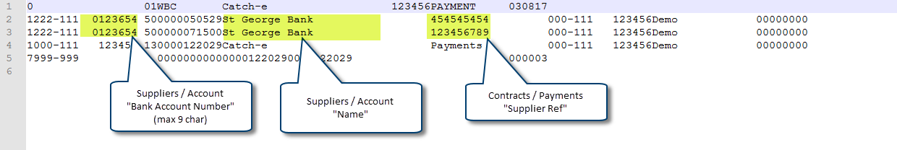

Payments (ABA)
From Help wiki
Main Page → Fleet / Payments → Payments / Periodic → Payments (ABA) →  Payments Setup | Bank Account Setup → Payments Troubleshooting
Payments Setup | Bank Account Setup → Payments Troubleshooting
Contents |
Overview
The Payments(ABA) file can be used for scheduled payments posted in Payments / Periodic.
The set-up for the Payments(ABA) file is detailed below.
References
Refer to the Australian Payments Clearing Association website: [1] and their Direct Entry Fact Sheet sheet for more information.
The following programmer blog is also helpful: [2]
Supplier Set-up
- Suppliers / Account "BSB Number" and "Bank Account Number" is populated
- Suppliers / Account "ABA Format Type" is selected appropriately from either 'Supplier' or 'Payment Reference'
ABA Format Type 'Supplier'
'Supplier' is the default format. Use this to makes payments to the supplier's bank account. Each payment will be shown as a separate row. 
ABA Format Type 'Payment Reference'
Use 'Payment Reference' to make a separate payment to a subsidiary bank account for each vehicle contract.
This is done by combining the supplier's "BSB" and the contract's "Supplier Ref" to work as the bank account for payment.
This feature was created for finance payments being made to St George, who run a subsidiary account for each contract.
- You will see a payment alert if any contracts are not linked to a driver record, and you won't be able to post the payment. This is because the driver's name forms part of the ABA file.
- The Contracts / Payments "Supplier Ref" field is not restricted to 9 characters, but if used in this ABA file, the records can only be 9 digits long. If it's longer, you will get an alert and the Text(ABA) will not print.
- These validation's are not applied to contracts when the Contract Type "Group" is 'Salary Packaged'.
_Payment_Reference_v2.PNG.html)
ABA file fields
Vist the Bank Account Setup page for the set-up requirements. The table below lists which fields are populated into the ABA file from the banking tables.
| [table]field_name | Field Value | Comment | |
|---|---|---|---|
| [gl_bank_accounts]bank | Text (3) | Must be an approved financial institution abbreviation. (Refer to APCA publication BSB Numbers in Australia.) | |
| [gl_bank_accounts]account_name | Text (26) | Payer's Name. Must not be all blanks. Should be User preferred name. | |
| [gl_bank_accounts]account_name_short | Text (16) | Name of Remitter. Must not contain all blanks. This field is used by Financial Institutions for statement narrative. | |
| [gl_bank_accounts]bsb | NNN-NNN | The BSB that is displayed on a Detail-Credit row (if created). | |
| [gl_bank_accounts]account_number | Numeric (9) | The Account Number that is displayed on a Detail-Credit row (if created). | |
| [gl_bank_account_aba_mappings]acpa_number | Numeric (6) | User Identification Number which is assigned by APCA and User Financial Institutions for transacting credit ABA files. | |
| [gl_bank_account_aba_mappings]aba_description | Text (12) | Transaction Description. Should accurately describe transactions. This is displayed in the first row of the ABA file.
E.g. Payments | |
| [gl_bank_account_aba_mappings]aba_self_balancing_flag | Rule | If this flag is set to 'no', only Detail-Credit rows will be created. If 'yes' then a Detail-Debit row is created also. The description of this row reads as 'Payments', 'Receipts' or 'Reimbursements' to reflect the transaction being generated, in this case it would show 'Payments'. |
Useful Queries
select ba.bank_account_id ,ba.gl_code_id,ba.bank, ba.account_name,ba.account_name_short , baam.process_type, baam.aba_description, baam.apca_number, baam.aba_self_balancing_flag from gl_bank_accounts as ba inner join gl_bank_account_aba_mappings as baam on baam.bank_account_id = ba.bank_account_id and process_type = 'payables' ;
System Notes
- 7008: Payments enhancements::ABA generation in Payments. Live 01/04/2014
- 9607: Provide alert on payments.aba file if unable to create. Live 12/05/2014
- 15594: Separate debit and credit aba_identification_number. Live dd/04/2017
- DEV-20108: Create provision for use of multiple bank accounts in ABA files. Live dd/03/2018
- (DEV-20419) Enable use of multiple bank accounts in BECS / Reimbursements (ABA). Live dd/mm/2019
- (DEV-20938) Payments / Periodic alert - Print failed, contracts must have drivers!. Live dd/03/2020
- (DEV-21023) ABA file not generating due to missing 'Supplier Ref'. Live 20/04/2020
- (DEV-21504) Contracts / Payments - Manual post does not need pay validations. Live 04/10/2021
- (DEV-21639) St George lease payments reference fix. Live 13/06/2022

_Supplier.png.html){kind=link}